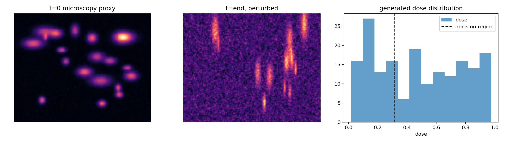
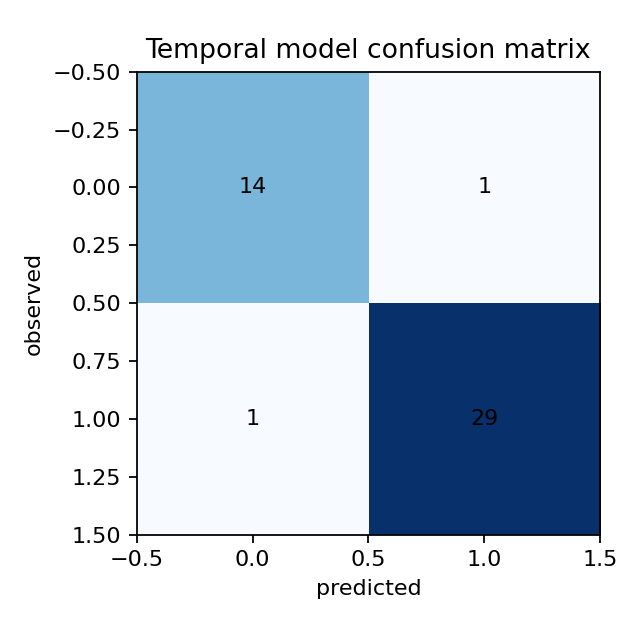
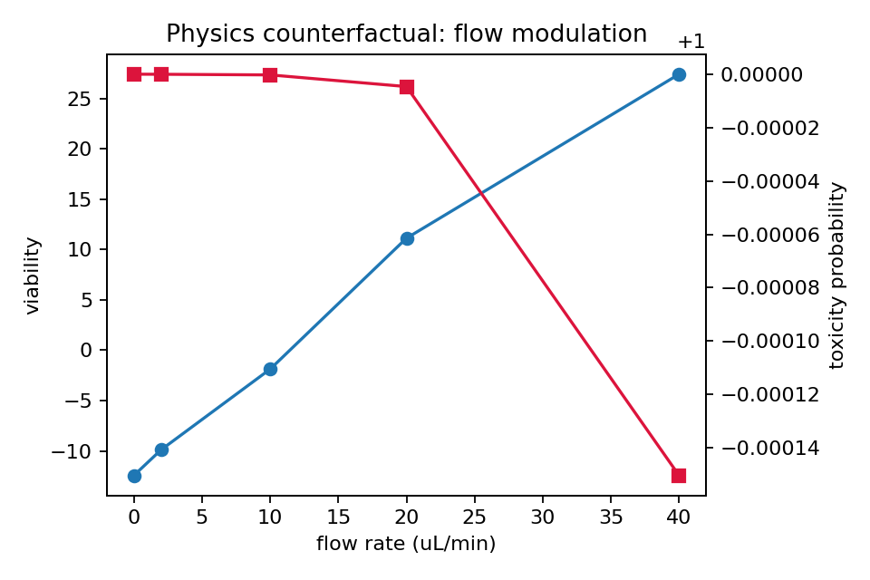

Self-contained synthetic organ-on-chip proxy benchmark; no clinical claim.
Static ROC-AUC: 0.280 · Temporal: 0.996 · Multimodal physics: 0.998



{
"count_ratio": 0.1667,
"area_ratio": 0.343,
"intensity_ratio": 0.3621,
"elongation_ratio": 2.0583,
"motility": 1.4545,
"persistence": 0.3913,
"count_slope": -0.9091,
"area_slope": -17.1526,
"intensity_slope": -0.0261
}
flow_rate_uL_min wall_shear_proxy predicted_toxicity_probability predicted_viability
0.0 0.00 1.000000 -12.435605
2.0 0.36 1.000000 -9.887142
10.0 1.80 1.000000 -1.878284
20.0 3.60 0.999995 11.120635
40.0 7.20 0.999850 27.410045
Uncertainty is a transparent distance-from-threshold proxy and must not be read as a clinical confidence interval.